Sunday, September 9
| Back to Home Page |
| Sunday, our day of "rest". We
had spent the night with Jeb & Amy. The next morning we decided to
ride their horse Preacher. The horse got caught up in some old wire
that was on the ground. It used to be electrified but it wasn't
anymore. However, the horse didn't know that and went into a
panic. He bolted through the woods. At one point Eric ended up
heading right while the horse headed left. Eric went head-first into
a tree. Luckily, it was rotten and it broke off as Eric's shoulder
hit it. So all Eric ended up with were some scrapes and a good
story!
Later that day we met Larry, Ada, Timmy, and Trudy at the Purple Frog Gardens for a Salsa festival. It was a commune-type atmosphere where everyone pitches in to wash, chop, and mix all the ingredients. At the end of the day, you get to take a large jar of the salsa you just helped make home with you. We took the hot kind back to the ranch and most of it was eaten in one meal. It was a good time. We spent that evening at the ranch, then the next day we traveled all day to get back to Houston. We made it home only 16 hours before the terrorist attack caused all flights to be cancelled. Lucas and Kristi were only minutes from boarding a plane to San Antonio for their honeymoon when the flights were cancelled. We are glad to have had these good times with our friends and family, especially since the attack. |
|
|
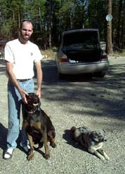 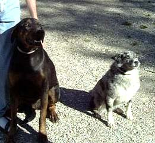 |
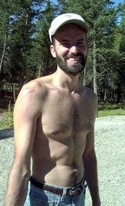 |
| Eric with the super dogs - Brooks and Annabell | Eric after his graceful dismount from Jeb's horse |
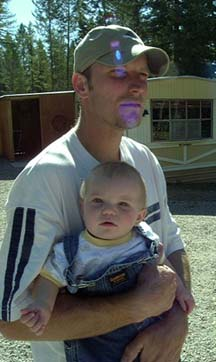 |
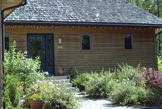 |
| Jeb & Madison | The house were Larry and Ada were staying |
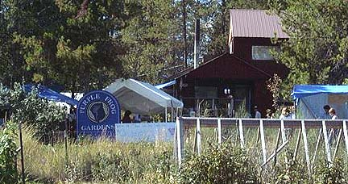 |
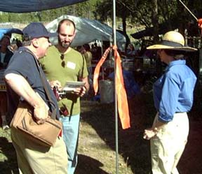 |
| The Purple Frog Gardens | Timmy, Eric, and Trudy |
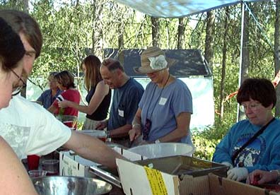 |
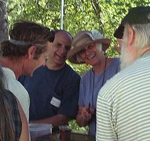 |
| Larry and Ada choppin'... | and grinnin' |
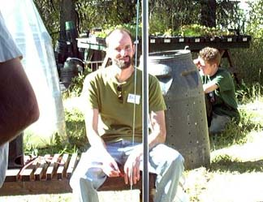 |
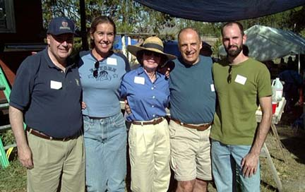 |
| I have a picture like this of Eric at every festival we've ever attended. | The whole gang, minus Ada who took the picture for us. Fun times! |